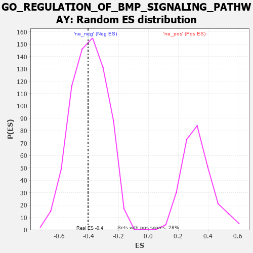

| | | Dataset | 7d |
| Phenotype | NoPhenotypeAvailable |
| Upregulated in class | na_neg |
| GeneSet | GO_REGULATION_OF_BMP_SIGNALING_PATHWAY |
| Enrichment Score (ES) | -0.4049099 |
| Normalized Enrichment Score (NES) | -1.0172807 |
| Nominal p-value | 0.47148818 |
| FDR q-value | 0.8481703 |
| FWER p-Value | 1.0 |
Table: GSEA Results Summary
 Fig 1: Enrichment plot: GO_REGULATION_OF_BMP_SIGNALING_PATHWAY
Fig 1: Enrichment plot: GO_REGULATION_OF_BMP_SIGNALING_PATHWAY
Profile of the Running ES Score & Positions of GeneSet Members on the Rank Ordered List
| PROBE | GENE SYMBOL | GENE_TITLE | RANK IN GENE LIST | RANK METRIC SCORE | RUNNING ES | CORE ENRICHMENT | | 1 | HES5 | | | 661 | 0.571 | -0.0257 | No |
| 2 | FST | | | 698 | 0.560 | 0.0260 | No |
| 3 | FZD1 | | | 1574 | 0.379 | -0.0459 | No |
| 4 | GATA4 | | | 1837 | 0.330 | -0.0457 | No |
| 5 | SMAD4 | | | 1860 | 0.326 | -0.0157 | No |
| 6 | NEO1 | | | 1879 | 0.323 | 0.0145 | No |
| 7 | FOXD1 | | | 2093 | 0.292 | 0.0170 | No |
| 8 | PELO | | | 2386 | 0.247 | 0.0051 | No |
| 9 | HIPK2 | | | 2389 | 0.247 | 0.0297 | No |
| 10 | SFRP5 | | | 3154 | 0.129 | -0.0534 | No |
| 11 | UBE2O | | | 3348 | 0.097 | -0.0679 | No |
| 12 | SMAD7 | | | 3369 | 0.093 | -0.0610 | No |
| 13 | SKI | | | 3762 | 0.032 | -0.1071 | No |
| 14 | PPM1A | | | 3953 | 0.002 | -0.1308 | No |
| 15 | SFRP2 | | | 4065 | -0.018 | -0.1429 | No |
| 16 | ABL1 | | | 4125 | -0.027 | -0.1477 | No |
| 17 | ILK | | | 4510 | -0.096 | -0.1863 | No |
| 18 | FKBP8 | | | 5296 | -0.270 | -0.2579 | No |
| 19 | FBN1 | | | 6080 | -0.499 | -0.3062 | Yes |
| 20 | SMAD2 | | | 6216 | -0.541 | -0.2688 | Yes |
| 21 | MSX2 | | | 7299 | -1.171 | -0.2872 | Yes |
| 22 | XIAP | | | 7947 | -3.696 | 0.0030 | Yes |
Table: GSEA details [plain text format]

Fig 2: GO_REGULATION_OF_BMP_SIGNALING_PATHWAY: Random ES distribution
Gene set null distribution of ES for GO_REGULATION_OF_BMP_SIGNALING_PATHWAY